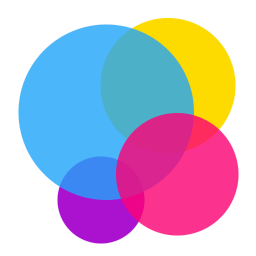
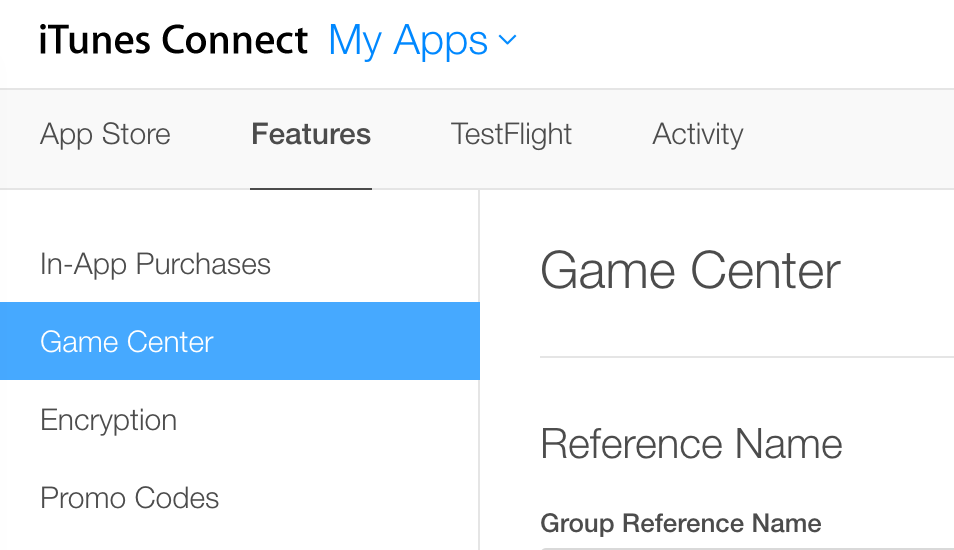
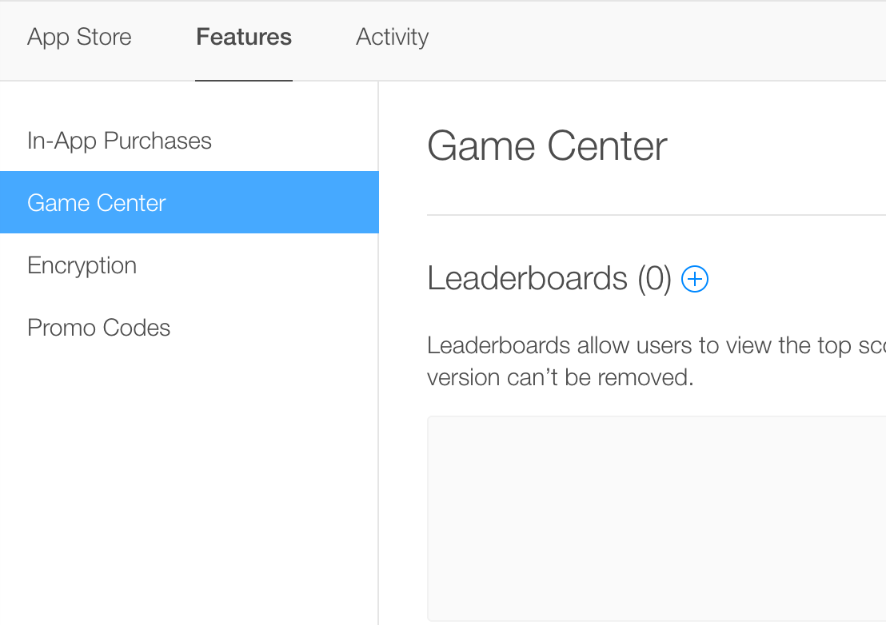
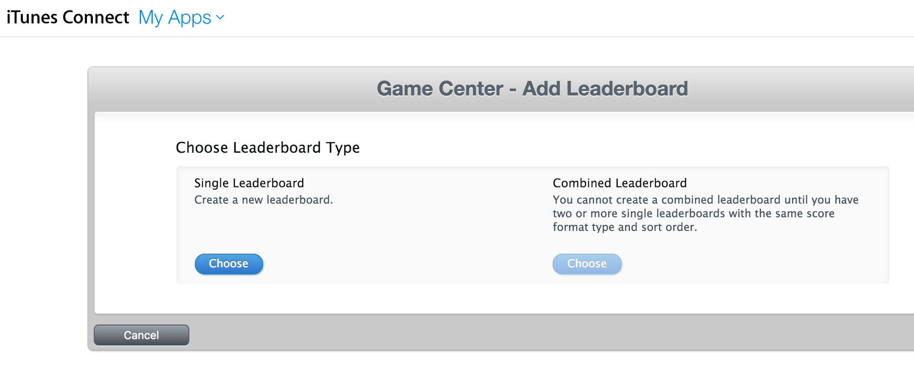
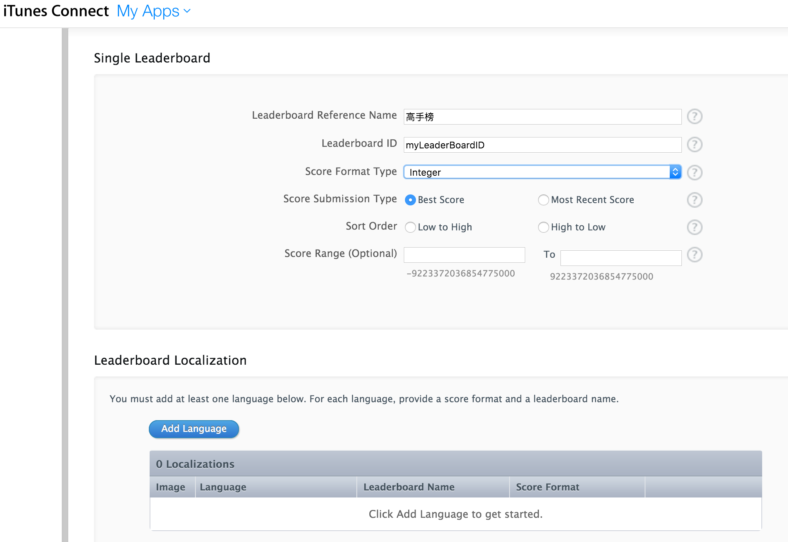
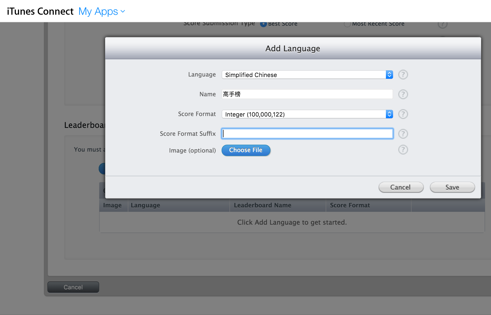
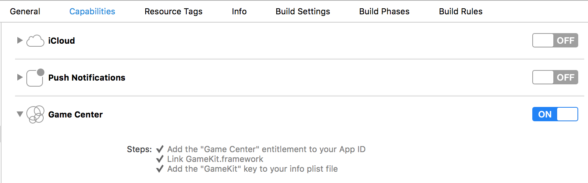

Game Center集成：从概念到实战
tags:开发随笔
Game Center概述

在App Store中，最流行的应用类型非游戏莫属。几乎所有的iOS用户都下载并玩过游戏。有各种样的游戏玩家，有人为之痴狂，有人只是偶尔玩玩。不过无论是哪种玩家，都会注重游戏的趣味性。在游戏中能够实现目标，或者和其他玩家比赛，无疑是趣味性的一种重要实现手段。而在iOS中（和MacOS）中，伟大的苹果提供了Game Center，并提供了GameKit框架来让Game Center集成变得简单。
简单而言， Game Center提供了以下机制：
- 用户管理和验证。你的游戏不用再考虑用户注册，登录，密码找回，存储分数等繁琐的功能实现。Game Center为你的游戏提供了一个本地玩家（local player），这个对象为所有的游戏共享，你只需要调用即可；
- 排行榜。你只需要在 iTunesConnect中指定排行方式就可以轻松拥有一个或者多个排行榜;
- 记录成就。你的游戏需要定义里程碑，调用Game Center就可以保存进度；
- 挑战。Game Center提供了让玩家挑战其他玩家的机制。
实战
要让游戏支持Game Center，有三个步骤需要做：
- 在iTunesConnect中配置；
- XCode工程配置；
- 代码支持；
为了简单起见，我们假设:
- 你的游戏功能已经基本开发完毕，本文只专注于Game Center集成这一部分；
- 简单起见，本文没有涉及到玩家挑战等功能；
- 开发用的编程语言为Swfit(如果用objective-C也类似)；
在iTunesConnect中配置
如果你还没有在iTunesConnect中添加应用记录的话，你需要添加一个。可以查看这里 了解如何操作。有了应用记录，你就可以配置Game Center了。
登录iTunesConnect，在My Apps中选中你的应用，点击"Features"栏，在左边的导航中找到"Game Center",如下图所示：

在页面中找到"Leaderboards (0) "，0表示目前有0个排行榜。

点击后面的"+"，出现下面的界面：

这里让你选择是创建单一排行榜，还是合并的排行榜。我们选择单一排行榜(Single Leaderboard)
然后需要填一些基本信息:
- "Leaderboard Reference Name"，排行榜名称；
- "Leaderboard ID"，排行榜ID，后面程序需要这个；
- Score Format Type,分数的格式，整数还是带小数点的分数；

填完基本信息后，我们需要添加至少一个排行榜的本地语言（Leaderboard Localization）：

XCode工程配置
在 xCode中，找到target，选中 “Capabilities”标签栏，找到Game Center，打开开关：

XCode会将GameKit添加到你的工程。
代码支持
有了 Game Center后，要写的代码不多。我们只需要用代码做以下几件事:- 游戏启动时验证用户；
- 游戏过程中提交用户得分；
- 显示排行榜;
以下分开来说。
游戏启动时验证用户
因为Game Center所有的操作都需要本地玩家(local player)，所以需要在启动时验证用户。验证用户的逻辑其实很简单。就是看用户是否已经在本机登录过，如果没有，则弹出Game Center的登录界面：
func authenticateLocalPlayer(){
let localPlayer = GKLocalPlayer.localPlayer()
localPlayer.authenticateHandler = {(viewController, error) -> Void in
if (viewController != nil) {
let vc: UIViewController = self.view!.window!.rootViewController!
vc.presentViewController(viewController!, animated: true, completion: nil)
}
else {
print((GKLocalPlayer.localPlayer().authenticated))
}
}
}
有了这段代码，只需要在GameScene的didMoveToView中调用一下上面这个方法就好了。
游戏过程中提交用户得分
实现如下:
func reportScore(score:Int) {
//check if user is alredy logged in game center
if GKLocalPlayer.localPlayer().authenticated {
let scoreReporter = GKScore(leaderboardIdentifier: "grp.TopStrategist")
scoreReporter.value = Int64(score)
let scoreArray: [GKScore] = [scoreReporter]
GKScore.reportScores(scoreArray, withCompletionHandler: {(error : NSError?) -> Void in
if error != nil {
print("error:%@", error)
}
})
}
}
显示排行榜
显示排行榜一般需要:
在用户点击显示排行榜时，暂停当前游戏；
- 在用户退出排行榜后，继续当前游戏；
在界面上放一个按钮，当按钮响应时调用下面这个函数:
//shows leaderboard screen
func showLeader() {
if stateMachine.currentState is GameSceneActiveState && !paused {
togglePause()
}
let vc = self.view?.window?.rootViewController
let gc = GKGameCenterViewController()
gc.gameCenterDelegate = self
vc?.presentViewController(gc, animated: true, completion: nil)
}
上面的代码会弹出排行榜。
要响应退出排行榜继续游戏，需要GameScene实现 GKGameCenterControllerDelegate
class GameScene: GKGameCenterControllerDelegate
这个GKGameCenterControllerDelegate只有一个方法需要我们实现：
func gameCenterViewControllerDidFinish(gameCenterViewController: GKGameCenterViewController)
{
gameCenterViewController.dismissViewControllerAnimated(true, completion: nil)
if stateMachine.currentState is GameSceneActiveState && paused {
togglePause()
}
}
写到这里，Game Center的集成就完成了。用了 Game Cetner之后，是不是有让你的游戏如虎添翼的感觉？
如果本文对你有用，不妨考虑对我打赏 :)